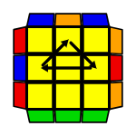
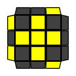
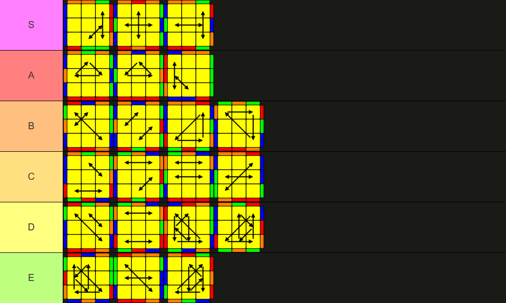

MY FAVORITE CUBING ALGS ˶ᵔ ᵕ ᵔ˶
These are my favorite algorithms to perform during a speedsolve. They are part of the popular CFOP method, which is my preferred method for solving the cube :p
-

U(b) Permutation! This permutation is one of the easiest and shortest PLL algorithms U.U I like it better than U(a) because it doesn't require the 'backflick' finger trick from the way I do it (I use my right hand for the M2 move).M2 U' M' U2 M U' M2
-
 T permutation!! Even though it's a little long, I find this to be the most satisfying and consistent algorithm to execute >:O It flows super fast and has amazing finger tricks. Most of my PBs ended with a T-perm, if not a PLL skip (˶°ㅁ°)!!
T permutation!! Even though it's a little long, I find this to be the most satisfying and consistent algorithm to execute >:O It flows super fast and has amazing finger tricks. Most of my PBs ended with a T-perm, if not a PLL skip (˶°ㅁ°)!!R U R' U' R' F R2 U' R' U' R U R' F'
-
 OLL 23 ('U-OLL'). Definitely not the easiest OLL to execute, but it is extremely fast to recognize, and I personally find the algorithm to be very satisfying to perform.
OLL 23 ('U-OLL'). Definitely not the easiest OLL to execute, but it is extremely fast to recognize, and I personally find the algorithm to be very satisfying to perform.R2 D R' U2' R D' R' U2' R'
-

OLL 22 ('π-OLL') o/ Again, there are definitely easier OLLs to execute than this, like sune or antisune. But this one is almost just as fast (like pretty much all edges-solved OLLs), but way more satisfying to execute, while the sunes are so straightforward I find them to be little boring —_—R U2 R2 U' R2 U' R2 U2 R
Bonus: PLL algorithms tierlist ranked by how fast I can execute them
